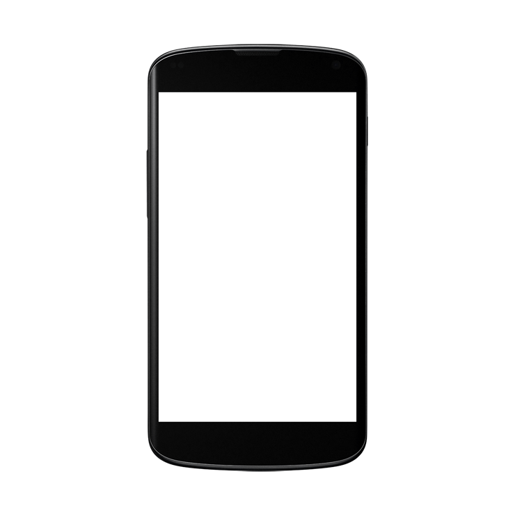
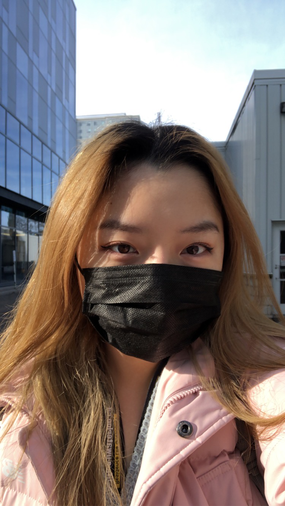

An enthusiastic tech lover with a growth-mindset 💗
My name is Irene (Yunyoung) Choi, a 18-year-old girl aspiring to become a software developer. Having first experience with computer science in high school allowed me to explore different areas of technology, from learning the fundamental structures of modern computers to designing and analysing codes. Although it was initially challenging, it inspired me to strive for better, ultimately resulting in the desire to become a software developer.
One cool fact about me is that having lived in four drastically different countries, I was often put in changing situations where the need to adapt and pushing my limits were constantly required. Initially, although I was quite overwhelmed with feelings of loneliness and hopelessness, I was able to arduously find ways to improve my situation. From this, I discovered the importance of appreciating what I have at the moment, and having no regrets by always striving to do my best. I believe that I have worked hard towards my goal of becoming a software developer, and being a Waterloo computer science student enabled me to get a step closer to reaching my future success. I am well aware that the journey will be challenging, but as I am determined, I will remain resilient and persistent to strive better, and to push my limits at all costs.

